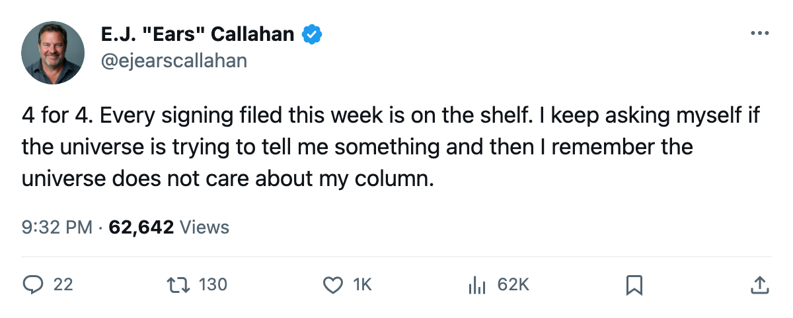
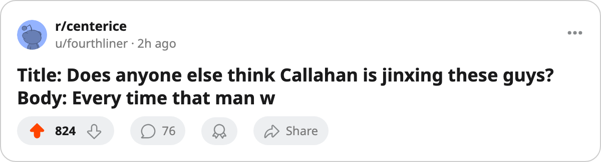

RUMOR METER: 4 Signings Filed Since April 30. All 4 Land on IR. The Pattern Is Not Broken. 🔥🔥🔥
Every man filed in the last five days is now wearing a body part. Three of the four clubs that got hit are still alive in the Cup.
 E.J. "Ears" CallahanInsider · The Hot Stove
E.J. "Ears" CallahanInsider · The Hot Stove
4 for 4 in the latest batch. The pattern is alive.

The piece
Four signings filed between April 30 and May 1. Four body parts logged before any of them could finish a week. The desk's pattern, which the March 25 edition had at 12 for 15, now adds 4 for 4 in the latest batch and refuses to die.
 Dallas Stars filed John Erskine70 on April 30 at $55,890. He carried an elbow designation with an onset between May 2 and May 4, out until May 7. The same day, Dallas filed
Dallas Stars filed John Erskine70 on April 30 at $55,890. He carried an elbow designation with an onset between May 2 and May 4, out until May 7. The same day, Dallas filed  Claude Lemieux76 at $457,500. His wrist injury carries the same window, a June 6 return. Two signings, two trips to the trainer, one calendar day apart.
Claude Lemieux76 at $457,500. His wrist injury carries the same window, a June 6 return. Two signings, two trips to the trainer, one calendar day apart.
 Edmonton Oilers signed Micki Dupont60 on May 1 for $333,200. A shoulder, same May 2 to May 4 onset, out until June 1.
Edmonton Oilers signed Micki Dupont60 on May 1 for $333,200. A shoulder, same May 2 to May 4 onset, out until June 1.  Mighty Ducks of Anaheim filed
Mighty Ducks of Anaheim filed  Andy McDonald70 the same day at $44,150. Ankle, same window, out until May 11.
Andy McDonald70 the same day at $44,150. Ankle, same window, out until May 11.
The hit rate on this batch is perfect. The clubs that caught it are new to this desk's pattern file: Dallas, Edmonton and Anaheim have never appeared in a Callahan signing-injury column before. The pattern had lived on the eliminated, then migrated to the contenders, then reached Tampa Bay. Now it has three clubs still breathing in the Cup. Dallas needs one more win tonight to close out  Phoenix Coyotes. Anaheim needs one more win on the road tomorrow to close out Edmonton. Toronto and Pittsburgh play Game 7 tonight with nothing settled.
Phoenix Coyotes. Anaheim needs one more win on the road tomorrow to close out Edmonton. Toronto and Pittsburgh play Game 7 tonight with nothing settled.
The injury designations are the league's. The causes are not recorded. The onset windows are the league's, not mine. What is mine is the sequence: sign, wait, place on the shelf. The window between the signing and the onset ranges from 2 to 5 days across these four.
The sample size is what it is. But 4 for 4 in a single batch is the cleanest run the pattern has produced since it started feeding in March. If you need a fifth data point, the rookie draft sits 35 days out. Teams file deals before it.
My call: the next signing filed by any club before the draft will land on the injured list. That is what I have to say about it.

